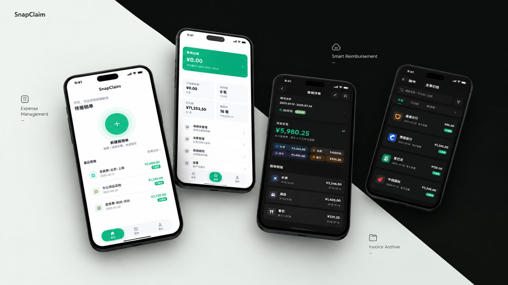

📷
扫一下二维码
对着发票上的二维码扫，名称、金额、日期自动填好，几秒钟一条明细。

把摊在相册、邮箱和聊天记录里的票据捡回来：扫码或截图识别，自动算好差补与退补， 一键归档成能直接交上去的报销单。火车、飞机、酒店、用车、高速费、地铁费六类明细一处记清， 免注册、免登录，数据只存在你自己的手机里。
它能帮你做什么
从「看到一张票据」到「交出一张报销单」，中间那些烦人的步骤都交给它。
对着发票上的二维码扫，名称、金额、日期自动填好，几秒钟一条明细。
纸质发票、电子发票截图都行。文字识别全程在你手机上完成，不联网、不上传。
在微信、相册、文件管理器里选中图片 → 分享 → SnapClaim，自动识别并弹出可以改的预览，确认即成一条明细。
一屏三张订单的订票长图，会自己数出这是三笔，按订单顺序把钱一一对上，逐个等你确认。
差补按天数自动算（含头尾），超标金额单独记并从退补里扣，六类明细自动汇总。
归档＝已报销。首页只留该处理的，翻历史也不会和报完的混在一起。
一键导出 .snapbackup 备份，换机后导入即可；还能选「合并」，把两部手机的数据按单据去重拼在一起。
浅色 / 深色 / 跟随系统随你挑，记得住你的选择；首次打开每页都有分步引导，系统开了「减少动态」动画就自动收起来。
钱是怎么算的
想核对的话看这张表。明细能记六类：火车、飞机、酒店、用车、高速费、地铁费；用车再分「市内交通」和「往返交通」。
| 项 | 怎么来的 |
|---|---|
| 差补 | 出差天数（含头尾）× 100 元 |
| 总金额 | 所有明细 + 差补 + 超标金额 |
| 预借金额 | 飞机 + 酒店 + 用车 |
| 退补金额 | 火车 + 高速费 + 地铁费 + 差补 − 超标金额 |
更新日志
版本号以 pubspec.yaml 为唯一来源，应用内显示与备份文件里的记录都取自它。
常见问题
不需要。除了你在「关于」页主动点反馈按钮去 GitHub 提 issue，App 不会联网。
不会主动扫。只有你自己选了一张图、或者主动把图分享给 SnapClaim 时，它才处理那一张。
识别结果会先弹出来让你确认和修改，不会直接写进单子。改完再点确定。
导出过备份就能导回来（导入时可选合并或覆盖）。没导出过的话——本地数据删了就真的没了，建议定期导出一份。
代码里留着 iOS / macOS / Windows / Linux / Web 的工程壳，但目前只有 Android 在维护。
本页顶部显示的就是当前最新版（直接读取 GitHub 发布记录）。想订阅通知，可以在 GitHub 仓库点 Watch → Releases only。
报销单和明细都写在手机本地的 SQLite 里，没有账号体系，也没有服务器可以上传——所以也就没有什么「隐私政策」要读。
.snapbackup 由你自己保存，去向由你决定